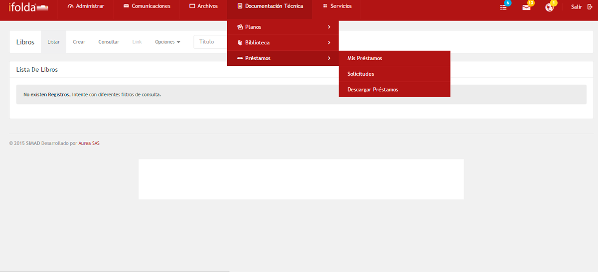
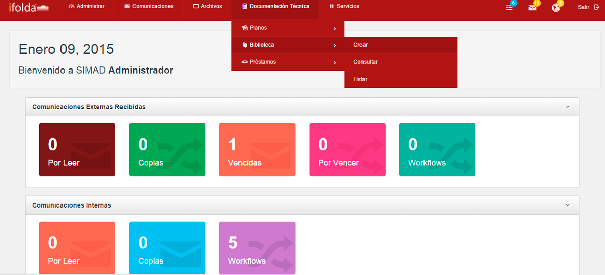
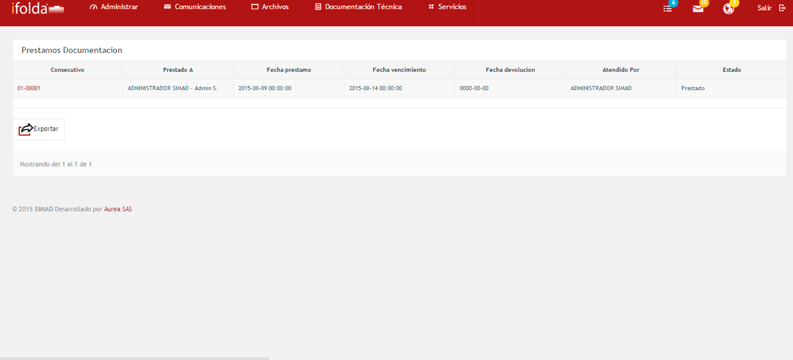
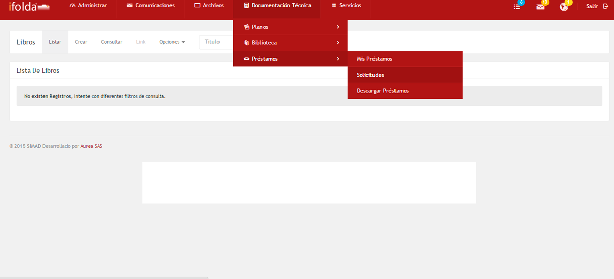
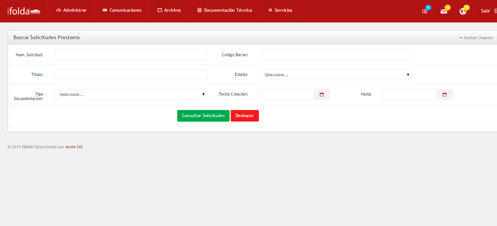
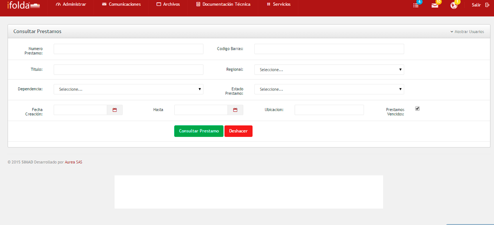

El módulo de Préstamos permite la administración, control y seguimiento de los préstamos que se hacen a través de la biblioteca generados al interior de la organización.
Mis prestamosir a inicio

Permite ver todas los documentos que el usuario tiene en su poder en el sistema SIMAD.
Para ver los documentos que el usuario ha solicitado en préstamo, realice los siguientes pasos:

Solicitudesir a inicio

Permite ver todas la documentación que los usuarios han solicitado al CAD en calidad de préstamo en el sistema SIMAD.
Para ver las unidades documentales que los usuarios han solicitado, realice los siguientes pasos:

Descargar prestamosir a inicio
Permite visualizar todas la documentación que el usuario ha solicitado al CAD en el sistema SIMAD y su estado.
Para consultar la documentación que los usuarios han devuelto al CAD, realice los siguientes pasos:
